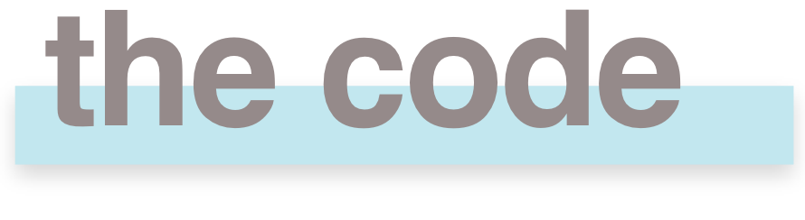
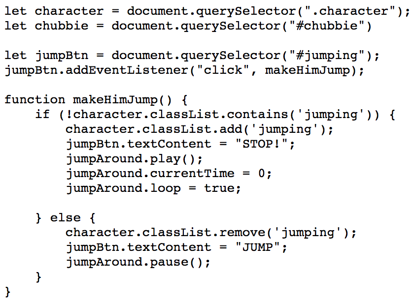

The assignment was to make a webpage with the character from the previous project (Chubbie) where the user can turn ten different css animations on and off. This functionality had to be javascript controlled, include an animated svg of some kind and at least one sound to help the user understand the application.




In this project I learned how to animate with javascript using event listeners. I got a deeper understanding of how web programming works and how html, css and javascript are connected.